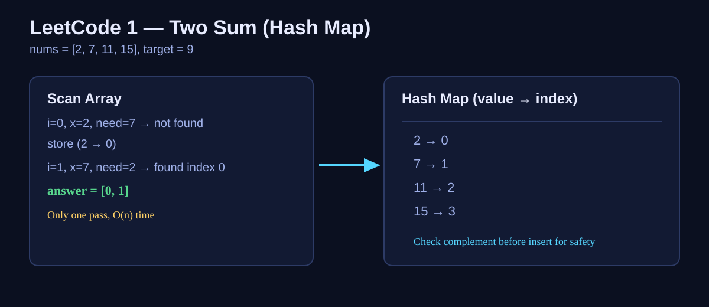

LeetCode 1: Two Sum (One-Pass Hash Map)
LeetCode 1ArrayHash TableJavaSource: https://leetcode.com/problems/two-sum/
Today we solve LeetCode 1 - Two Sum, one of the most classic hash map interview questions.

English
Problem Summary
Given an integer array nums and an integer target, return the indices of two numbers such that they add up to target. You may assume exactly one valid answer exists, and you cannot use the same element twice.
Key Insight
When we are at value x, we need target - x. If we have already seen that complement earlier, we can answer immediately. So we store seen numbers in a hash map: value -> index.
Brute Force and Why Insufficient
Brute force tries every pair (i, j), i < j, and checks whether nums[i] + nums[j] == target. This is O(n^2), which becomes slow for large input sizes and wastes work by rechecking combinations.
Optimal Algorithm (Step-by-Step)
1) Create an empty hash map seen.
2) Iterate index i from left to right:
a) Let x = nums[i], need = target - x.
b) If need exists in seen, return [seen[need], i].
c) Otherwise store seen[x] = i.
3) Return empty result only for defensive completeness.
Complexity Analysis
Time: O(n) average with hash lookups.
Space: O(n) for the hash map.
Common Pitfalls
- Inserting first and checking later can fail for inputs like [3,3] with target=6 if logic is wrong.
- Returning values instead of indices.
- Using the same index twice.
- Assuming sorted input and applying two pointers directly (not valid unless sorted first, which changes indices).
Reference Implementations (Java / Go / C++ / Python / JavaScript)
class Solution {
public int[] twoSum(int[] nums, int target) {
Map<Integer, Integer> seen = new HashMap<>();
for (int i = 0; i < nums.length; i++) {
int need = target - nums[i];
if (seen.containsKey(need)) {
return new int[]{seen.get(need), i};
}
seen.put(nums[i], i);
}
return new int[0];
}
}func twoSum(nums []int, target int) []int {
seen := map[int]int{}
for i, x := range nums {
need := target - x
if j, ok := seen[need]; ok {
return []int{j, i}
}
seen[x] = i
}
return []int{}
}class Solution {
public:
vector<int> twoSum(vector<int>& nums, int target) {
unordered_map<int, int> seen;
for (int i = 0; i < (int)nums.size(); ++i) {
int need = target - nums[i];
if (seen.count(need)) {
return {seen[need], i};
}
seen[nums[i]] = i;
}
return {};
}
};class Solution:
def twoSum(self, nums: List[int], target: int) -> List[int]:
seen = {}
for i, x in enumerate(nums):
need = target - x
if need in seen:
return [seen[need], i]
seen[x] = i
return []var twoSum = function(nums, target) {
const seen = new Map();
for (let i = 0; i < nums.length; i++) {
const need = target - nums[i];
if (seen.has(need)) {
return [seen.get(need), i];
}
seen.set(nums[i], i);
}
return [];
};中文
题目概述
给定整数数组 nums 和整数 target，请返回两个下标，使得 nums[i] + nums[j] = target。你可以假设每个输入只有一个有效答案，且同一个元素不能重复使用。
核心思路
遍历到当前值 x 时，我们只关心补数 target - x 是否已经出现过。用哈希表记录“值到下标”的映射，能在常数时间内查找补数，从而一次遍历得到答案。
暴力解法与不足
暴力法枚举所有 i < j 的组合，逐个判断和是否等于 target，时间复杂度为 O(n^2)。数据一大就会明显超时，不适合面试中的高效解法要求。
最优算法（步骤）
1）初始化空哈希表 seen。
2）从左到右遍历数组下标 i：
a）设 x = nums[i]，need = target - x；
b）若 need 在 seen 中，直接返回 [seen[need], i]；
c）否则记录 seen[x] = i。
3）按题意通常一定有解；返回空数组只是防御式写法。
复杂度分析
时间复杂度：O(n)（哈希平均常数查找）。
空间复杂度：O(n)（哈希表存储已访问元素）。
常见陷阱
- 容易把“值”当“下标”返回。
- 忽略“不能复用同一元素”限制。
- 先插入再查询时逻辑不严谨，导致重复使用同一位置。
- 误用双指针（原数组未排序，排序会破坏原下标）。
多语言参考实现（Java / Go / C++ / Python / JavaScript）
class Solution {
public int[] twoSum(int[] nums, int target) {
Map<Integer, Integer> seen = new HashMap<>();
for (int i = 0; i < nums.length; i++) {
int need = target - nums[i];
if (seen.containsKey(need)) {
return new int[]{seen.get(need), i};
}
seen.put(nums[i], i);
}
return new int[0];
}
}func twoSum(nums []int, target int) []int {
seen := map[int]int{}
for i, x := range nums {
need := target - x
if j, ok := seen[need]; ok {
return []int{j, i}
}
seen[x] = i
}
return []int{}
}class Solution {
public:
vector<int> twoSum(vector<int>& nums, int target) {
unordered_map<int, int> seen;
for (int i = 0; i < (int)nums.size(); ++i) {
int need = target - nums[i];
if (seen.count(need)) {
return {seen[need], i};
}
seen[nums[i]] = i;
}
return {};
}
};class Solution:
def twoSum(self, nums: List[int], target: int) -> List[int]:
seen = {}
for i, x in enumerate(nums):
need = target - x
if need in seen:
return [seen[need], i]
seen[x] = i
return []var twoSum = function(nums, target) {
const seen = new Map();
for (let i = 0; i < nums.length; i++) {
const need = target - nums[i];
if (seen.has(need)) {
return [seen.get(need), i];
}
seen.set(nums[i], i);
}
return [];
};
Comments